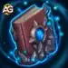

O chão treme enquanto Corvus avança um rei que se recusou a permanecer morto. Neste guia definitivo, mostraremos como aproveitar seus poderes sombrios para esmagar seus inimigos e dominar o campo de batalha.
A morte foi apenas o começo para Corvus, o monarca ressuscitado que agora se ergue como um dos tanques mais formidáveis de Hero Wars. Com um poder gelado e uma determinação inquebrável, este Rei Morto-Vivo domina o campo de batalha com ataques em área devastadores e melhorias em equipe que farão seus inimigos desejarem nunca ter cruzado o território de Graven.
Prós e Contras de Corvus - Hero Wars: Web e Facebook
✅ Prós
Resistência Incomparável: Com uma das maiores reservas de Vida do jogo (1.066.327 no máximo) e alta Armadura (55.166), Corvus pode absorver uma quantidade imensa de dano.
Altar das Almas: Seu altar único causa dano puro (escalando com a Vida) sempre que aliados são atingidos, criando pressão constante.
Prioridade de Evolução das Habilidades de Corvus - Hero Wars: Dominion Era
Aprenda quais habilidades de Corvus, o Rei Morto-Vivo, devem ser evoluídas primeiro, com fórmulas de dano exatas para ajudá-lo a maximizar seu potencial aterrorizante.
1. Golpe dos Condenados
Corvus atinge a linha de frente inimiga, reduzindo todas as suas defesas. Cada aliado Morto-Vivo torna esse efeito 10% mais forte.
Fórmula de Dano: (100% Ataque Físico + Nível × 100)
Fórmula de Redução de Defesa: (10% Ataque Físico + Nível × 25)
Habilidade Unidade dos Condenados, Hero Wars Dominion Era.
3. Altar das Almas
Invoca um altar que causa dano aos inimigos sempre que eles atacam sua equipe. A força do altar depende da vida de Corvus.
Fórmula de Dano: (1,2% Vida + Nível × 10 + 10)
Fórmula de Vida: (90% Vida + Nível × 200 + 4000)
Prioridade de Evolução:Muito Alta – A habilidade mais poderosa de Corvus. O altar escala com sua imensa reserva de Vida, causando dano enquanto protege sua equipe. Sempre evolua esta habilidade primeiro, pois torna Corvus mais resistente e ao mesmo tempo mais perigoso.
Habilidade Altar das Almas, Hero Wars Dominion Era.
4. Defesa Real
Quando um aliado fica abaixo de 20% de vida, Corvus o puxa para a segurança (recarga de 8 segundos).
Oliver O melhor mascote para Corvus, pois aumenta diretamente sua sobrevivência. A cura de Oliver quando a Vida cai abaixo de 50% combina perfeitamente com o papel de tanque de Corvus. Os bônus de Vida e Armadura do patrono tornam Corvus ainda mais difícil de matar, o que fortalece diretamente seu Altar das Almas (já que o dano do altar escala com a Vida).
Albus Uma alternativa poderosa que aumenta diretamente o dano do Altar de Corvus. Albus amplia o Dano Puro (causado pelo altar) e concede bônus de Ataque Físico (que fortalece o Golpe dos Condenados). Embora excelente para o ataque, não oferece os benefícios defensivos que Corvus precisa como tanque de linha de frente.
Maximize o potencial morto-vivo de Corvus com este guia de prioridade de skins, focando nos atributos que aumentam suas capacidades de tanque e de dano.
Skin Padrão
Ganho de atributos: Força +1.365
- Vida da Força: +54.500
- Ataque Físico da Força: +1.365
Prioridade de Evolução:Muito Alta – A melhor skin geral para Corvus. A Força aumenta tanto sua Vida (deixando-o mais resistente e fortalecendo o dano do Altar) quanto o Ataque Físico (potencializando o Golpe dos Condenados).
Total de Pedras de Skin de Força para nível máximo:
30.825
Skin de Inverno
Ganho de atributos: Armadura +10.650
Prioridade de Evolução:Alta – O enorme aumento de armadura torna Corvus quase imortal contra equipes físicas. Essencial para contra-atacar causadores de dano físico populares como K'arkh ou Yasmine.
Total de Pedras de Skin de Força para nível máximo:
55.410
Observação: Esta skin só pode ser adquirida durante o evento de skins de Inverno.
Total de Pedras de Skin de Força para nível máximo:
55.410
Prioridade de Evolução dos Artefatos de Corvus - Hero Wars: Dominion Era
Otimize o poder morto-vivo de Corvus priorizando os artefatos que melhoram primeiro suas capacidades de tanque e de suporte à equipe.
Artefato de Arma: Lança do Rei Morto-Vivo
Ganho de atributos: Armadura +50.190
Ativa com a habilidade suprema, concedendo bônus de atributos para toda a equipe por 9 segundos.
Prioridade de Evolução:Muito Alta – Deve ser sua prioridade absoluta. O enorme aumento de Armadura torna Corvus incrivelmente durável, e o buff em toda a equipe combina perfeitamente com seu papel de tanque. Como ativa com a habilidade suprema, funciona frequentemente nas batalhas.

Artefato de Livro: Pacto do Defensor
Ganho de atributos: Armadura +12.546 | Defesa Mágica +12.546
Prioridade de Evolução:Alta – A conversão da Força concede a Corvus tanto uma Vida imensa (fortalecendo o dano do seu Altar) quanto mais Ataque Físico (ampliando o Golpe dos Condenados). Evolua imediatamente após a arma.
Prioridade de Evolução dos Glifos de Corvus
Otimize o desempenho do Rei Morto-Vivo focando nos glifos que aumentam sua capacidade de tankar e causar dano em batalha.
Prioridade de Evolução:Muito Alta – A prioridade absoluta. Vida aumenta a sobrevivência de Corvus E fortalece o dano do seu Altar das Almas (que escala com Vida). Sempre maximize este primeiro.
3º Glifo - Armadura
Atributos ganhos: Armadura +6.500
Prioridade de Evolução:Alta – Essencial contra equipes de dano físico. A armadura torna Corvus muito mais resistente contra os populares causadores de dano físico.
4º Glifo - Defesa Mágica
Atributos ganhos: Defesa Mágica +6.500
Prioridade de Evolução:Baixa – Corvus já possui uma Defesa Mágica natural elevada. Só evolua quando enfrentar especificamente múltiplos heróis de dano mágico.
Por que funciona: As Correntes da Fraqueza de Dante reduzem o atributo principal de Corvus (Força) em 7.022 (escalando com o ataque físico) por 5 segundos quando atingido por suas lanças. Isso enfraquece diretamente a Vida de Corvus (reduzindo o dano do Altar) e seu ataque físico (enfraquecendo o Golpe dos Malditos). A redução de atributos torna Corvus significativamente menos ameaçador.
Dorian
Por que funciona: A Aura Vampírica de Dorian fornece cura constante aos aliados próximos, neutralizando o dano puro do Altar das Almas de Corvus. Posicione os causadores de dano dentro do alcance da aura de Dorian para mantê-los vivos contra o dano persistente do altar. A cura compensa a pressão constante de Corvus.
Por que funciona: A Matriz de Defesa de Julius absorve todo o dano recebido (capacidade de 320.025) no início da batalha, anulando o dano inicial do Altar de Corvus. Após a quebra da matriz, a cura em grupo (57.429) compensa o dano residual. Isso oferece à sua equipe uma janela crucial de tempo para focar em Corvus antes que seu altar se torne avassalador.
Melhor Bandeira de Guerra para Corvus - Hero Wars
Descubra quais Bandeiras de Guerra maximizam o potencial de Corvus como morto-vivo, ampliando sua capacidade de tankar e apoiar a equipe em batalha.
Bandeira de Guerra do Fervor:
Benefício para Corvus e Equipe: O aumento de 10% na geração de energia para Tanques permite que Corvus ative sua habilidade suprema (e, consequentemente, o buff de seu artefato de arma) com mais frequência. Isso se encaixa perfeitamente em seu papel de tanque principal e suporte de equipe.
Bandeira de Guerra do Declínio:
Benefício para Corvus e Equipe: A redução de 10% na cura neutraliza equipes inimigas focadas em sustentação, tornando o Altar das Almas de Corvus mais letal contra composições dependentes de cura. Particularmente eficaz contra equipes com Dorian ou Martha.
Bandeira de Guerra dos Guerreiros Ágeis:
Benefício para Corvus e Equipe: Embora Corvus não seja um Guerreiro, essa bandeira beneficia aliados mortos-vivos guerreiros como Keira (em sua forma de morta-viva) ou Ishmael em equipes mistas. Recomendado apenas se estiver utilizando tais composições.
Melhores Equipes para Corvus - Hero Wars: Era do Domínio
Você gostou do nosso Guia do Corvus para Hero Wars PC? Há algo que não entendeu ou gostaria de sugerir mudanças? Convidamos você a se juntar à nossa sessão de comentários na página do Alexandre Games Blog. Não hesite em expressar sua opinião, clarificar suas dúvidas e compartilhar sua sugestões. Clique no botão abaixo para começar:


 30.825
30.825